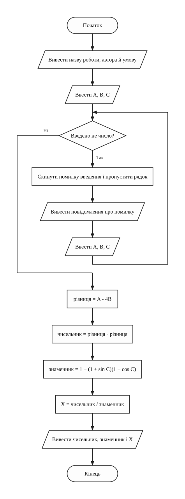
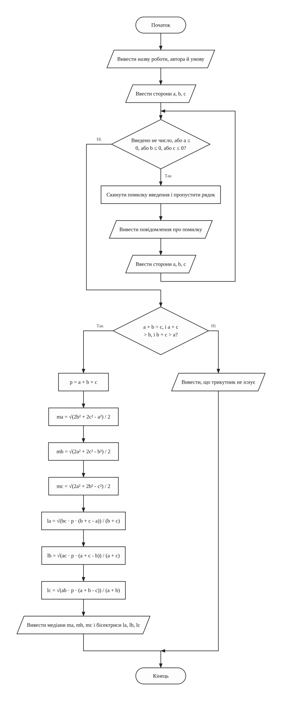
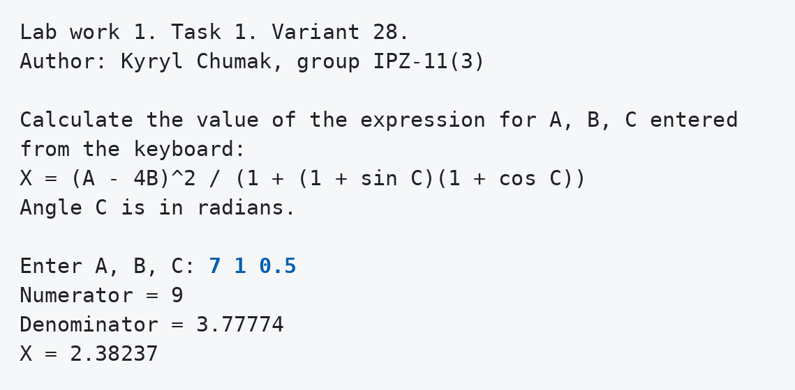
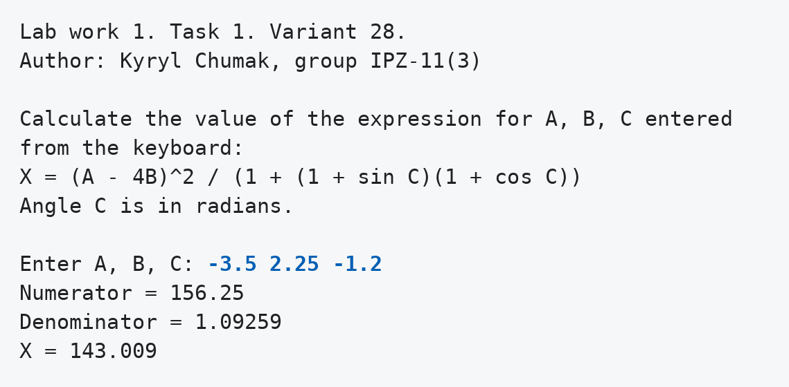
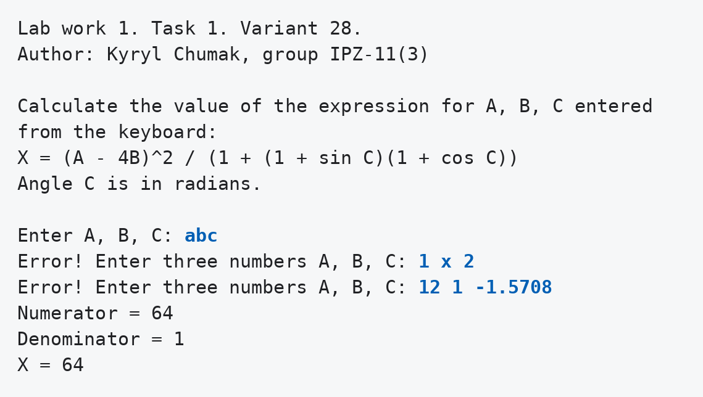
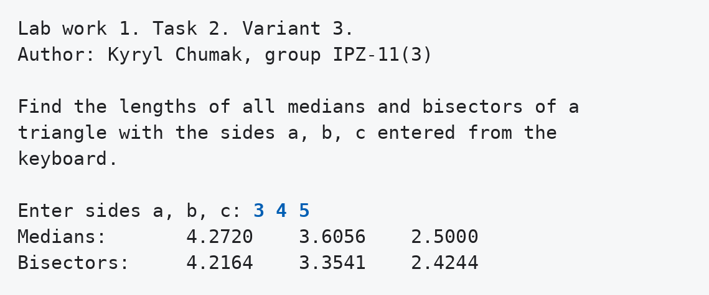
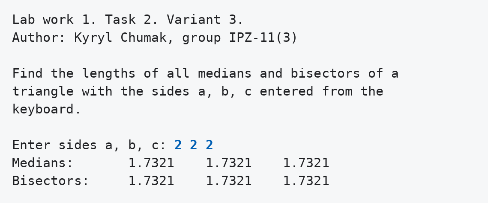
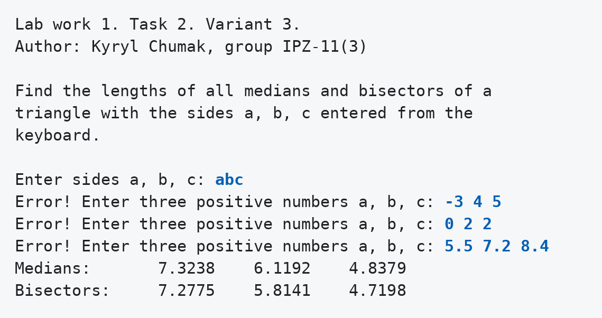
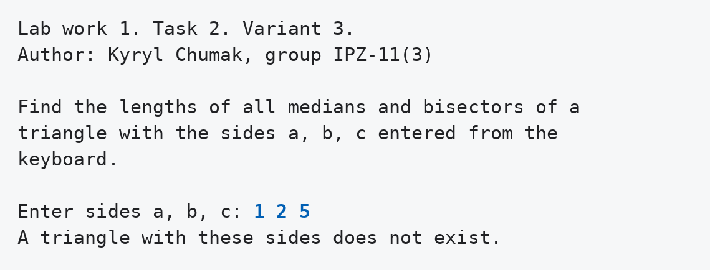
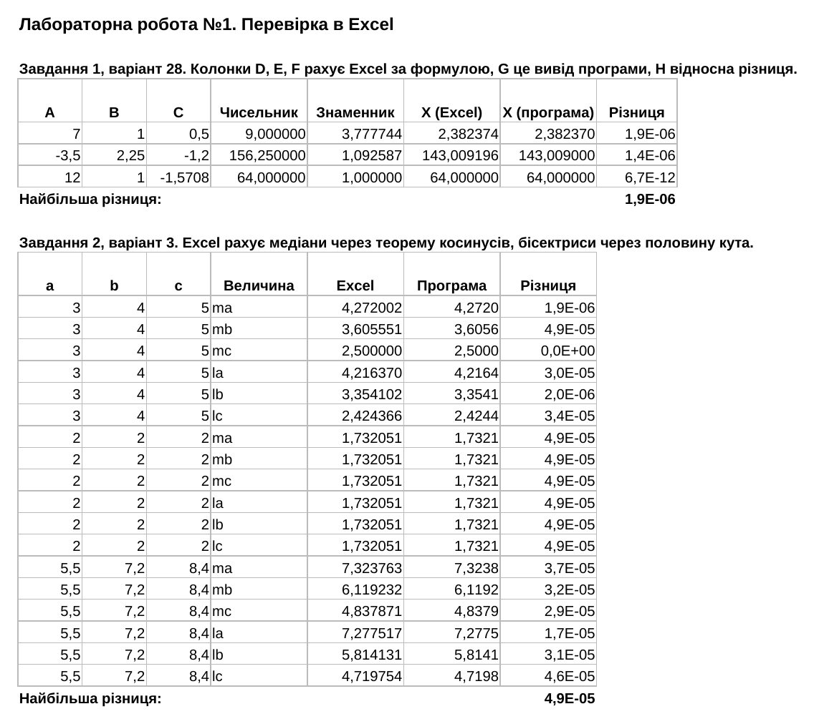

Варіанти 28 і 3. Виконав Чумак Кирил, група ІПЗ-11(3). Викладач Ковалюк Тетяна Володимирівна.
Мета роботи
- Вивчити особливості використання вбудованих типів даних: char, int, long, short, float, double, unsigned char, unsigned int, unsigned long.
- Вивчити особливості використання функцій введення - виведення.
- Навчитися застосовувати стандартні математичні функції.
Умови задач
Завдання 1, варіант 28
Таблиця 1.7 методички має 28 варіантів, тому номер у списку групи збігається з номером варіанта.
За даними, що введені з клавіатури в оперативну пам'ять, визначити значення виразу, використовуючи математичні функції, і вивести результат на екран. Вираз вибрати згідно з варіантом по таблиці 1.7. Довільні значення змінних A, B, C, D ввести з клавіатури.
Завдання 2, варіант 3
Таблиця 1.8 має 25 варіантів, тому для номера 28 у списку групи маємо 28 - 25 = 3.
Написати програму, що розв'язує задачу з математики та фізики шкільного курсу, відповідно до варіантів таблиці 1.8. Знайти довжини всіх медіан і бісектрис трикутника, якщо значення сторін a, b, c трикутника введені з клавіатури.
Аналіз задач
Завдання 1, варіант 28
Для розв'язання задачі потрібно ввести три дійсні числа A, B, C. Змінної D у виразі цього варіанта
немає, тому вона не вводиться. Кут C задається в радіанах, бо так працюють функції sin і
cos.
Вираз рахується по частинах. Спочатку обчислюється різниця A - 4B, а квадрат отримуємо множенням різниці саму на себе. Потім окремо рахується знаменник. Значення (1 + sin C) і (1 + cos C) не від'ємні, тому знаменник не менший за 1 і перевірка на нуль не потрібна.
Числа вводяться одним рядком. Якщо хоча б одне з них введено неправильно, програма виводить повідомлення і просить ввести всі три ще раз.
Таблиця 1 - Змінні програми завдання 1
| Змінна | Тип | Що зберігає |
|---|---|---|
a, b, c | float | числа A, B, C |
difference | float | значення A - 4B |
numerator | float | чисельник |
denominator | float | знаменник |
x | float | значення виразу X |
Завдання 2, варіант 3
Вводяться три сторони. Вони мають бути додатними, інакше програма просить ввести їх ще раз. Також програма перевіряє, чи існує трикутник: сума будь-яких двох сторін має бути більшою за третю. Якщо трикутника немає, виводиться повідомлення.
Медіани і бісектриси рахуються за сторонами. Формули для сторони a такі, для b і c вони записуються так само:
Таблиця 2 - Змінні програми завдання 2
| Змінна | Тип | Що зберігає |
|---|---|---|
a, b, c | float | сторони трикутника |
perimeter | float | периметр p |
medianA, medianB, medianC | float | медіани до сторін a, b, c |
bisectorA, bisectorB, bisectorC | float | бісектриси до сторін a, b, c |
В обох програмах увесь код записано у функції main.
Джерела: Ковалюк Т.В. Алгоритмізація та програмування, 2024; Ковалюк Т.В., Петрівський В.Я. Гарний стиль програмування мовами C, C++, C#, 2025.
Блок-схеми алгоритмів
Завдання 1, варіант 28

main (обчислення виразу X)Завдання 2, варіант 3

main (обчислення медіан і бісектрис трикутника)Тексти програм
Завдання 1, варіант 28
Файл task1.cpp
/// <summary>
/// Лабораторна робота №1, завдання 1, варіант 28. Обчислити значення
/// арифметичного виразу за числами, введеними з клавіатури.
/// </summary>
/// <remarks>
/// Ім'я файлу: task1.cpp
/// Автор: Чумак Кирил, гр. ІПЗ-11(3)
/// Номер версії модуля: version 1
/// </remarks>
#include <cmath>
#include <iostream>
using namespace std;
// Глобальні змінні
float a = 0; // число A
float b = 0; // число B
float c = 0; // кут C у радіанах
float difference = 0; // значення виразу A - 4B
float numerator = 0; // чисельник
float denominator = 0; // знаменник
float x = 0; // значення виразу X
/// <summary>
/// Вводить числа, обчислює вираз і виводить результат
/// </summary>
/// <returns>0</returns>
/// <summary>
/// Головна функція програми
/// </summary>
/// <returns>0 після завершення роботи</returns>
int main()
{
cout << "Lab work 1. Task 1. Variant 28." << endl;
cout << "Author: Kyryl Chumak, group IPZ-11(3)" << endl << endl;
cout << "Calculate the value of the expression for A, B, C entered" << endl;
cout << "from the keyboard:" << endl;
cout << "X = (A - 4B)^2 / (1 + (1 + sin C)(1 + cos C))" << endl;
cout << "Angle C is in radians." << endl << endl;
cout << "Enter A, B, C: ";
cin >> a >> b >> c;
while (cin.fail())
{
cin.clear(); // скинути помилку введення
cin.ignore(1000, '\n'); // і пропустити неправильний рядок
cout << "Error! Enter three numbers A, B, C: ";
cin >> a >> b >> c;
}
difference = a - 4 * b;
numerator = difference * difference;
denominator = 1 + (1 + sin(c)) * (1 + cos(c));
x = numerator / denominator;
cout << "Numerator = " << numerator << endl;
cout << "Denominator = " << denominator << endl;
cout << "X = " << x << endl;
return 0;
}
Завдання 2, варіант 3
Файл task2.cpp
/// <summary>
/// Лабораторна робота №1, завдання 2, варіант 3. Знайти довжини медіан і
/// бісектрис трикутника за його сторонами.
/// </summary>
/// <remarks>
/// Ім'я файлу: task2.cpp
/// Автор: Чумак Кирил, гр. ІПЗ-11(3)
/// Номер версії модуля: version 1
/// </remarks>
#include <cmath>
#include <iomanip>
#include <iostream>
using namespace std;
// Глобальні змінні
float a = 0; // сторона a
float b = 0; // сторона b
float c = 0; // сторона c
float perimeter = 0; // периметр трикутника
float medianA = 0; // медіана до сторони a
float medianB = 0; // медіана до сторони b
float medianC = 0; // медіана до сторони c
float bisectorA = 0; // бісектриса до сторони a
float bisectorB = 0; // бісектриса до сторони b
float bisectorC = 0; // бісектриса до сторони c
/// <summary>
/// Вводить сторони, перевіряє, чи існує трикутник, і виводить довжини медіан і
/// бісектрис
/// </summary>
/// <returns>0</returns>
/// <summary>
/// Головна функція програми
/// </summary>
/// <returns>0 після завершення роботи</returns>
int main()
{
cout << "Lab work 1. Task 2. Variant 3." << endl;
cout << "Author: Kyryl Chumak, group IPZ-11(3)" << endl << endl;
cout << "Find the lengths of all medians and bisectors of a" << endl;
cout << "triangle with the sides a, b, c entered from the" << endl;
cout << "keyboard." << endl << endl;
cout << "Enter sides a, b, c: ";
cin >> a >> b >> c;
while (cin.fail() || a <= 0 || b <= 0 || c <= 0)
{
cin.clear(); // скинути помилку введення
cin.ignore(1000, '\n'); // і пропустити неправильний рядок
cout << "Error! Enter three positive numbers a, b, c: ";
cin >> a >> b >> c;
}
if (a + b > c && a + c > b && b + c > a)
{
perimeter = a + b + c;
medianA = sqrt(2 * b * b + 2 * c * c - a * a) / 2;
medianB = sqrt(2 * a * a + 2 * c * c - b * b) / 2;
medianC = sqrt(2 * a * a + 2 * b * b - c * c) / 2;
bisectorA = sqrt(b * c * perimeter * (b + c - a)) / (b + c);
bisectorB = sqrt(a * c * perimeter * (a + c - b)) / (a + c);
bisectorC = sqrt(a * b * perimeter * (a + b - c)) / (a + b);
cout << fixed << setprecision(4);
cout << "Medians: " << setw(10) << medianA << setw(10) << medianB
<< setw(10) << medianC << endl;
cout << "Bisectors: " << setw(10) << bisectorA << setw(10) << bisectorB
<< setw(10) << bisectorC << endl;
}
else
{
cout << "A triangle with these sides does not exist." << endl;
}
return 0;
}
Результати виконання
Завдання 1, варіант 28



Завдання 2, варіант 3




Аналіз достовірності результатів
Перевірка в Excel
Файл check.xlsx містить обидва завдання. Вираз X там пораховано
функціями POWER, SIN і COS. Для трикутників використано інші
формули, ніж у програмі: медіана рахується за теоремою косинусів, а бісектриса через косинус половини
кута. Поруч стоять значення, які вивела програма.

Для виразу X найбільша відносна різниця дорівнює 1.9 · 10-6, бо програма друкує шість значущих цифр. Для трикутників найбільша різниця 4.9 · 10-5, бо довжини виводяться з чотирма знаками після коми.
Ручна перевірка
Таблиця 3 - Приклади, пораховані вручну
| Дані | Розрахунок | Очікується | Програма |
|---|---|---|---|
| A = 12, B = 1, C = -1.5708 | sin C майже -1, тому знаменник майже 1, X = 8 · 8 / 1 | 64 | 64 |
| сторони 3, 4, 5, медіана до c | трикутник прямокутний, медіана дорівнює половині гіпотенузи | 2.5 | 2.5000 |
| сторони 3, 4, 5, бісектриса до c | √(3 · 4 · 12 · 2) / 7 = √288 / 7 | 2.4244 | 2.4244 |
| сторони 2, 2, 2 | медіани й бісектриси збігаються з висотою 2 · √3 / 2 | 1.7321 | 1.7321 |
| сторони 1, 2, 5 | 1 + 2 менше за 5 | трикутник не існує | повідомлення |
Висновки
Я написав дві програми, де весь код стоїть у main: одна обчислює вираз із синусом і
косинусом, друга знаходить медіани і бісектриси трикутника. Бісектриси в
Excel пораховано іншим способом, через кути. Значення збіглися з
виводом програми з точністю до округлення. Також перевірено введення букв, недодатних сторін і
сторін, з яких трикутник не складається.